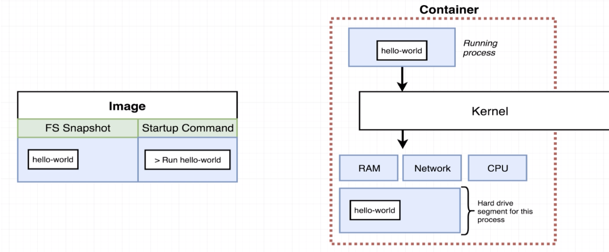
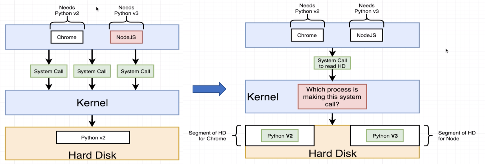
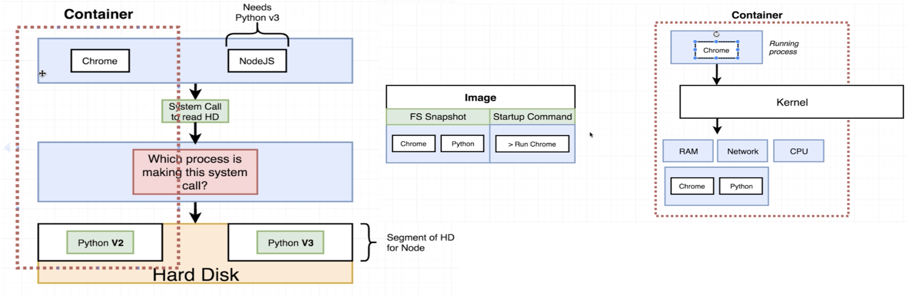

About Docker
Image: Single file with all dependencies and config.
Container: Instance of an Image, runs program.
Docker CLI: where to issue commands.
Docker Server(DAEMON): tool for creating image and container.

Flow:
docker run hello-world the client gives out command. Docker Server will search in Image Cache for hello-world Image. If there is no such image, it will search in Docker Hub. Then it will download the image and load the file into memory and create a container and then start a single program inside.
Why Docker? : Processes have different dependencies.

The solution is to allocate different HD segment for the apps.
What container do is allocate hardware (by Namespacing and Control Groups, which only for Linux. So the docker runs on Linux Virtual Machine under Windows and MacOS.) especially for the corresponding Image, and have the process running.

Lifecycle:
docker create: create a container with commanddocker start -aordocker start+ Container ID : start a container created, and run the command again (the default command is decided when creating the container, cannot be changed)
Docker Commands:
docker ps: show docker container running now
docker ps --all: all docker container created(included container shutted down)
docker system prune: remove all stopped containers, unused network, dangling images and build cache.
docker logs <Container ID>: retrieve all the emitted information of the container.
Stop a running container:
docker kill: send a kill signal to the process, shut down right nowdocker stop: send terminal signal to the process, safely stop the process and stop the container (if >10s, automatically kill)
docker exec -it <Container ID> <Command>: Execute an additional command in a container(need a new terminal).(-it means -i build STDIN tunnel bridging the container and the terminal, and -t show formatted text in the terminal)
docker exec -it <Container ID> sh: open a terminal/shell in the containerdocker run -it <image name> sh: create and run container and then run the shell